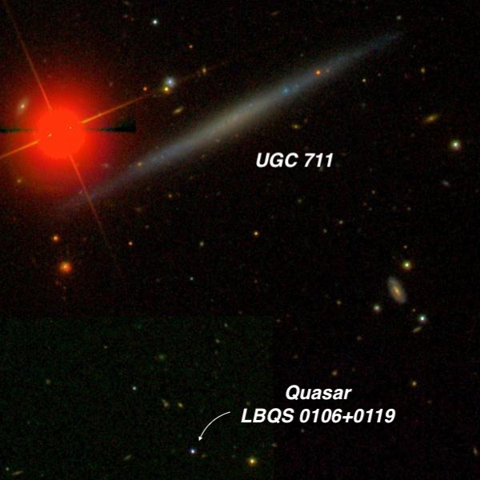
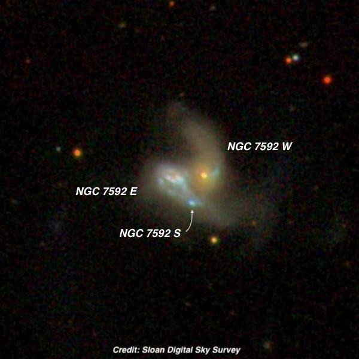
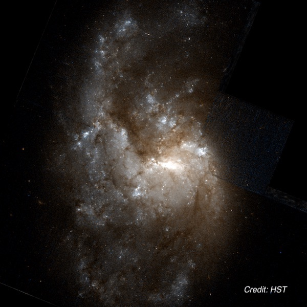
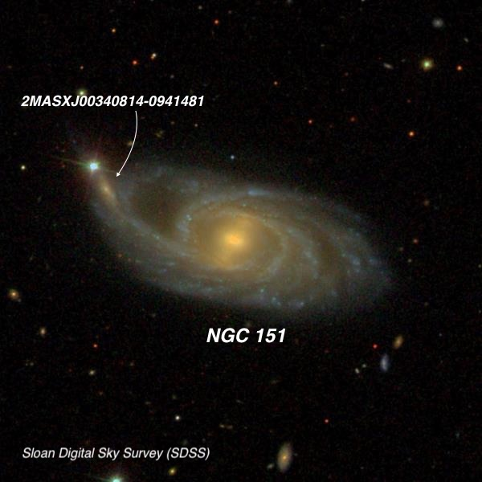
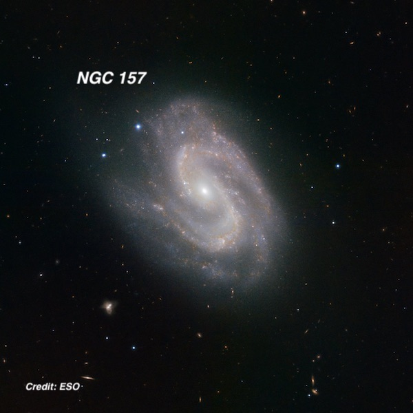
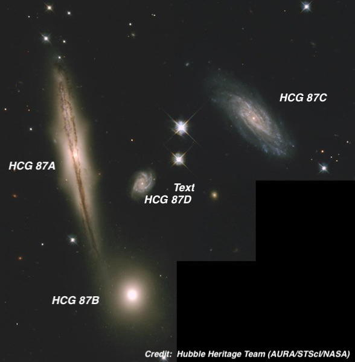

Lowrey 48 inch in October Part III
OR: Lowrey 48 inch in October Part III
Here’s the last selection of deep sky objects, which were viewed through Jimi Lowrey’s 48-inch f/4 on our third night, October 29th. The evening started off very promising – clear and calm with SQM readings about 21.5 MPSAS. In fact, we observed the first few targets at 976x. But as the night progressed, the seeing worsened and the wind picked up, making high power pretty useless (I made a futile attempt to see the pulsar at the center of the Crab Nebula). We called it quits bit early at 2:00 AM, as Howard Banich and I had to drive back to El Paso the next day. Although the weather ended up being a mixed bag, we returned home with memories, notes and sketches of several dozen breathtaking objects.Steve Gottlieb

UGC 711 is an an extreme edge-on, known of a “superthin", a classification introduced in 1981 by researchers Jean Goad and Morton Roberts. These wafter thin slivers are all disc (no bulge), and display axial ratios from 9:1 to 20:1. In general superthins are “late” gas-rich spirals of type Sc or Sd with no distinct dust lane. The famous edge-on NGC 4565 doesn't make the cut due to its bulge. Visually, superthins generally have a very low surface brightness and in the case of UGC 711 a 10th magnitude star only 2’ E (very close to the edge) adds to the difficulty. Ideally, you’d like to move it out of the field, but that’s not really possible in this case.
I previously observed (barely) this galaxy before through my 18” and estimated the dimensions as ~1.2’x0.15’ (ratio of 8:1). Through the 48”, I estimated the size as 2.7’x0.2’ for an axial ratio of 12 or 13:1 NW-SE. The central region was slightly brighter, but there was no bulge or nucleus.
This celestial needle has a poorly determined distance, but resides at roughly 75 million light years. A distant quasar, LBQS 0106+0119, lies 3.5’ S and provides an extreme depth of field. At 610x, it was barely glimpsed (V = 18.4) in poor seeing and wind. A 17th mag star, ~40" W, provided a signpost to pinpoint the position. The quasar has a redshift of z = 2.10, which implies the light-travel time is a whopping 10.6 billion years and a current (comoving) distance is 17.7 billion light years!
A grayscale HST photo of the galaxy is available here. Use the arrow buttons if you only see part of the galaxy.

This is another galaxy discovered by William Herschel during his 279th “sweep” in September of 1784. He only noted a single extremely faint glow, but images reveal that NGC 7592 is an interacting, merged pair with a separation of only 13” between centers! A third component, NGC 7592 S[outh], has been identified as a galaxy in the past, but on the SDSS image above it looks to me to be a giant star-forming HII knot in the tidal tail that extends in a wiggly fashion to the west (right).
NGC 7592W has an active Seyfert 2 nucleus and NGC 7592B is classified as a starbursting system. NGC7592W has a much better defined nucleus than NGC7592E , which is probably more highly inclined to our line-of-sight but displays a clumpy ring of emission.
Using 610x the western galaxy (NGC 7592 W) appeared moderately bright, small, round, with a sharp stellar nucleus. A low surface brightness tidal arm was attached on the west side and it hooked to the north. The brighter eastern galaxy (NGC 7592 E) was roundish, ~25" diameter, with a very bright core that was offset towards the north side. A very small HII knot, 6"-8" diameter (labeled as NGC 7592 S), was at the southwest end [13" from center]. A very low surface brightness halo extended southwest of 7592 E and directly south of 7592 W. This section is part of a second tidal tail.

NGC 1385 is one of many bright galaxies in Fornax. On this HST image it almost looks like it is being pulled apart by an interaction. It shows a small elongated core or bar with very patchy, flocculent spiral arms that are full of star-forming knots. The outer halo is highly asymmetric and appears to be undergoing intense star formation only in the northern (top) half of the galaxy. I’ve observed this galaxy before in a C-8, back in 1981 and though a 17.5” scope in 1994.
With the 48” scope we used 610x, which perfectly framed this moderately large galaxy. Overall, the galaxy was elongated ~5:3 N-S, ~3.0'x1.8', with a prominent thick bar running ~E-W through the center. A small, bright knot was close north of the west end of the bar (visible in the HST image near the left edge of the galaxy).
Visually the appearance was weird and chaotic. A brighter, elongated patch (probably a short section of a spiral arm) was easily seen extending north of the bar. Only the initial part of the southern arm attached to the west end of the bar was visible. The main, long spiral arm was rooted on the east end of the bar and stretched well north of the central region. Its surface brightness seemed irregular or patchy. The arm faded and was less defined as it curled clockwise and spread west on the north end of the halo. The south portion of the halo was faint overall (due to dust) but showed a semi-circular outline due to the very low surface brightness southern arm. A small faint companion ( LEDA 788671 ) was also visible 3.5’ south of NGC 1385.
Although lying in Fornax, NGC 1385 is part of the Eridanus Group, an irregular and complex system of galaxies that apparently is broken up into 3 subgroups that may be in the process of merging. The subgroup containing NGC 1385 is sometimes called the Eridanus Cluster with brightest member NGC 1395 . While in the area take a look at NGC 1371 42’ southwest and the fascinating planetary nebula NGC 1360 another degree further southwest.

This beautiful Cetus spiral is on Herschel II observing program. Herschel discovered this galaxy in November 1785 and called it “pretty bright and large, little elongated and brighter in the middle.” Lewis Swift found the galaxy again in August 1886 and assumed it was new. As a result, it was later catalogued as NGC 153 , so you may run across this designation also. An early photograph was taken in 1919 at the Helwan Observatory, south of Cairo in Egypt and the image described as "4' x 1.5', bright almost stellar nucleus; spiral with at least 3 long, much curved arms in what are almost stellar condensations. One of the arms appears to wind completely around the nucleus."
Coincidentally, a spiral arm stretches directly to a mag 12.6 star to the east (left) of the galaxy and appears to abruptly end. But just before the star is what appears to be an elongated patch directly in line with the spiral arm. But what exactly is this patch?
Again, we observed this galaxy at 610x and I was impressed by its inner ring and a long, drawn out spiral arm! Overall the galaxy extended more than 2:1 WSW-ESE, ~3.2' x 1.4’. As the image shows it was very strongly concentrated with an intensely bright core that gradually increased to the center. Immediately west of the core was a noticeably darker gap and a lower contrast gap was east of the core. These gaps were outlined by bright arcs, each about 90°, creating a partial oval ring surrounding the core.
The western half of the halo had a low surface brightness and extended at least 1.5' from the center. I noticed a brightening at the extreme west end of the halo. Checking the SDSS, this is a split spiral arm, separated beyond a darker dust lane. A thin, long spiral arm was attached at the south side of the core (along the inner ring) and was easily seen gently curving northeast, extending directly to a mag 12.6 star!
A small, faint knot, at most 10" diameter, was easily seen near the end of this arm, very close SSW of the star. At the time we assume this was an emission knot in the galaxy, but I found out later it’s actually a companion galaxy (2MASX J00340814-0941481), though its redshift is 1/3 greater than NGC 151, so it likely resides in the background and it’s just a coincidental alignment.

This is another galaxy that I first observed around 1980 with a C8, probably from Fremont Peak. And like the other NGCs, it was discovered by William Herschel in one of his early sweeps in December of 1783. David Levy nicknamed it the "Amoeba Galaxy", though I’ve never run across another mention of this name. But the sweep of the inner spiral arms resembles a giant “S” — yes, Superman’s logo!
With 610x this was quite a showpiece! The two prominent spiral arms on the photo were outlined visually by dust lanes, forming a striking, stretched "S"! At the center was a very small, intense nucleus. A beefy spiral arm was attached at the west side of the nucleus. It showed a high contrast, due to inner and outer dust lanes with a brighter, curving arc at its southwest end. This arm rotated clockwise towards the southeast side, and hooked towards the northeast. The second thick arm was attached on the east end of the nucleus. It also showed a high contrast arc along its northeast portion, then rotated sharply clockwise towards the west and angled southwest to the west of the central region. Two mag 13.5/15.5 stars (0.6' apart) were 1.3' NE of center. (bluish on the photo). A dusty triangular wedge (between the spiral arms) extended from these stars towards the core.
In May 2009 a supernova was discovered in a South African search project at magnitude 16.6. SN 2009em was a type Ic, the result of the core-collapse of a massive progenitor star.

This HST image of HCG 87 was released a full 20 years ago. None of its members carry NGC or IC designations and they weren't discovered until photographic survey in the 1960s and 70s. Like several other Hickson compact groups (such as Stephan’s Quintet) it contains a higher redshift galaxy (by roughly 12%), namely 87D, that apparently lies in the background. The remaining three members are roughly 400 million l.y. distant.
The showpiece is HCG 87A , with its prominent dust lane that seems to bifurcate on the northeast end. Its nucleus is “dimpled” or X-shaped on the image, creating a box or peanut-shaped bulge, characteristic of barred spirals seen edge-on. 87A and 87B are by far the brightest members of the group — the blue magnitude of 87D is only 17.8, so it's definitely a target for larger scopes. Both HCG 87A and 87B have low luminosity AGNs.
We first examined the group at 542x and then climbed the ladder again to take another look at 976x, which made sighting 87D much easier. These are my eyepiece notes:
A: Moderately bright, edge-on 5:1 SW-NE, 1.3'x0.25', brighter core with possibly a faint stellar nucleus. A bright mag 14/14.5 pair at 13" separation is 40” NW and a faint mag 16.5/17 pair at similar separation and position angle is off the NE end. B: Fairly bright, round, 25" diameter, relatively large brighter core. Highest surface brightness of the 4 galaxies. C: Faint, moderately large, oval 5:3 E-W, 35"x20", low even surface brightness with no core. D: Very faint, round, only 10" diameter.